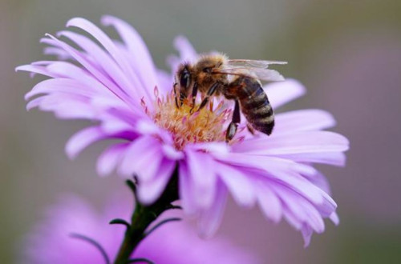

Blur
Sepia
Negatyw
Obraz pszczola.jpg z tekstem alternatywnym o treści „pszczoła na fioletowym kwiatku”
‒ Poniżej trzy pola opcji: „Blur”, „Sepia” i „Negatyw”, zgrupowane tak, że jednocześnie może być
Strona 4 z 7
wybrane tylko jedno pole
‒ Poniżej przycisk „Zastosuj”, którego kliknięcie powoduje transformacje obrazu 1